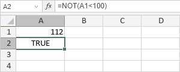

NOT funkcija
NOT funkcija je jedna od logičkih funkcija. Koristi se za proveru da li je logička vrednost koju unesete TRUE ili FALSE. Funkcija vraća TRUE ako je argument FALSE, i FALSE ako je argument TRUE.
Sintaksa
NOT(logical)
NOT funkcija ima sledeći argument:
| Argument | Opis |
|---|---|
| logical | Vrednost koja se može evaluirati kao TRUE ili FALSE. |
Napomene
Kako primeniti NOT funkciju.
Primeri
Postoji argument: logical = A1<100, gde je A1 12. Ovaj logički izraz je TRUE. Dakle, funkcija vraća FALSE.
Ako promenimo vrednost A1 sa 12 na 112, funkcija vraća TRUE:
